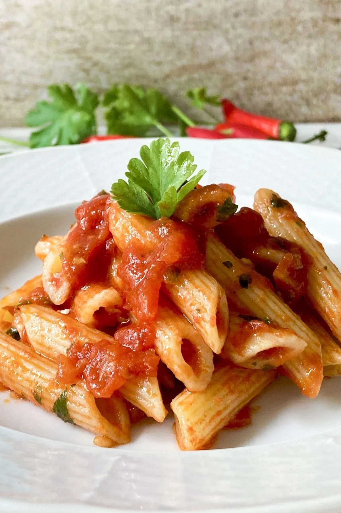

İtalyan mutfağının en sevilen yemeklerinden biri olan Penne all'Arrabbiata, acılı sosuyla ünlüdür.
Bu lezzetli makarna yemeği, basit malzemelerle hazırlanabilir ve hızlı bir şekilde servis edilebilir.
Bu məşhur İtalyan pastası öz adını sousun tərkibindəki bol miqdarda qırmızı acı bibərdən (peperoncino) alır.
İtalyanlar acı bibərin yaratdığı yandırıcı təsirə və yeməyi yeyən insanın üzünün qızarmasına eyham vuraraq,
bu xörəyi "qəzəbli" adlandırıblar.
suyu 100o derecede qizdirin vesuya qizdiqca
H2O su artirilmis su tokmeliyik cart curt
Suya az makaron atin cox atsaz yapisar. Sarimsaqi yandirmamaqa diqqet eleyin. Pomidor sousunu makarona biserken yavas yavas elave edin. Servis eliyende ustune biraz peperoni ve zeytun yaqi qoyun.
Menbe: wikipedia